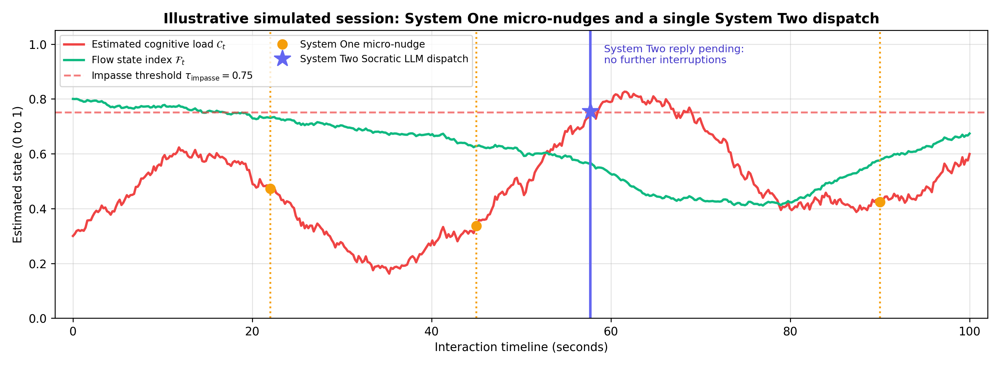
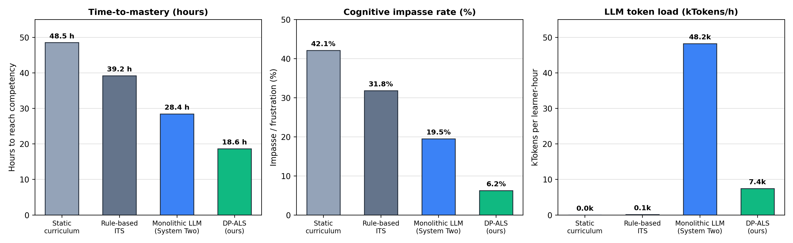

SHIFTING FROM ONE-TIME EDUCATION
TO CONTINUOUS GROWTH
A Dual-Process Cognitive Architecture Integrating System One Decision Models and Generative Socratic Tutors for Adaptive Lifelong Learning
ACCELERATED SKILL OBSOLESCENCE VS. STATIC SCHOOLING
THE MODERN PARADOX: 40-YEAR PROFESSIONAL LIFESPANS POWERED BY EPISODIC, FRONT-LOADED CREDENTIALS
RAPID SKILL DECAY
Non-linear technological acceleration has shrunk the half-life of learned skills to 5 years overall, and under 2.5 years in software engineering and data analytics.
SDG 8 • DECENT WORKFRONT-LOADED MODEL
Higher education remains front-loaded between ages 18 and 25. Professionals navigate four decades of technical shifts with unsupported, episodic upskilling.
SDG 4 • LIFELONG LEARNINGSYSTEMIC DISLOCATION
Static curricula exacerbate workplace dislocation and educational inequity. Directly threatens UN Sustainable Development Goals 4, 8, 9, and 10.
SDG 9 & 10 • RESILIENCERULE-BASED, BKT & IRT SYSTEMS
MONOLITHIC GENERATIVE LLMS
DUAL-PROCESS THEORY IN PEDAGOGICAL AI
HOW EXPERT HUMAN TEACHERS OPERATE: FAST INSTINCTIVE REFLEX + DELIBERATE ASYNCHRONOUS REASONING
SYSTEM ONE: AUTONOMOUS REFLEX
- Fast, Parallel & Reactive: Design target <40 ms inference.
- Monitors Micro-Telemetry: Keystroke intervals, cadence entropy, scroll jitter, dwell times.
- Zero UI Disruption: Preserves immersion while learner is in productive struggle.
- Action Set: Micro-nudges, syntax tips, IRT item calibration.
SYSTEM TWO: SOCRATIC REASONING
- Slow, Serial & Deliberate: Transformer-based LLM.
- Engaged Only Upon Impasse: Triggered when load exceeds threshold.
- Preserves Learner Agency: Generates conceptual analogies; never dumps raw solution code.
- Asynchronous RPC: Runs out-of-band to prevent UI locking.
THE SYSTEM ONE REFLEX ENGINE
EDGE-DEPLOYABLE OPEN-WEIGHT ENCODER FOR SUB-40 MS PEDAGOGICAL DECISIONS
GLINER2.5-DECIDE
Built on Fastino's 340M-parameter open-weight structured-decision encoder. Takes serialized client telemetry text and a typed question schema.
Single encoder forward pass without autoregressive decoding, yielding selected action probabilities and confidence scores.
NON-AUTOREGRESSIVEEDGE LATENCY PROFILE
Fast enough to synchronize with the learner's natural motor-cognitive keystroke actions.
SYNCHRONOUS REFLEXFORMAL ACTION ROUTER
Maps current interaction vector $x_t$ and compact cognitive history $\mathcal{H}_t$ to discrete interventions $\mathcal{A} = \{a_0, a_1, a_2, a_3, a_4\}$.
HIGH-FREQUENCY ROUTERPOMDP COGNITIVE STATE FILTERING
FORMAL RECURSIVE ESTIMATION OF LATENT COGNITIVE LOAD, FLOW STATE, AND STRUGGLE
MULTIMODAL TELEMETRY VECTOR
- $\Delta\tau_k$: Inter-keystroke latency offset
- $H_k$: Shannon entropy of input-interval cadence
- $\sigma_{\text{scroll}}$: Viewport scroll and UI jitter
- $e_{\text{syntax}}$: Immediate compilation/syntax validation errors
- $t_{\text{dwell}}$: Static viewport dwell duration
- $r_{\text{churn}}$: Rapid-retry execution frequency
LATENT 4D COGNITIVE STATE VECTOR:
POMDP BELIEF UPDATE
Maintains a continuous probability belief distribution $b(s_t)$ updated every 50 ms tick, where $P(x_t \mid s_t)$ is the observation model and $\mathcal{T}$ is the transition model.
PRODUCTIVE STRUGGLE (COGNITIVE LOAD THEORY):
Learner in proximal flow zone.
Triggers System Two remediation.
DISCRETE ACTIONS & REWARD OPTIMIZATION
BALANCING LEARNING GAINS, COMPUTE EXPENDITURE, AND IMMERSION PROTECTION
PASSIVE FLOW
Zero UI interruption. Preserves immersion while learner is in active flow and productive struggle.
AMBIENT NUDGE
Subtle inline typography or syntax tip. Corrects mechanical slips without modal interruption.
IRT ADAPTATION
Item difficulty recalibration. Tunes next task $\beta$ to maintain targeted success rate $p^*$.
SYSTEM TWO
Dispatches diagnostic payload $\Gamma$ to Socratic GenAI engine upon verified cognitive impasse.
COGNITIVE REST
Inserts micro-pause or spaced-retrieval when motor cadence indicates cognitive fatigue ($\Delta\tau_k > \tau_{\text{fatigue}}$).
CYBER-PHYSICAL ARCHITECTURE & ALGORITHM 1
COORDINATING CLIENT WORKERS, EDGE REFLEX GATEWAYS, AND ASYNCHRONOUS SOCRATIC APIS
CLIENT TELEMETRY WORKER
- Client JS Web Worker: Samples browser interaction signals every 50 ms.
- GDPR / FERPA Compliant: Zero keystroke text is ever captured.
- Computes cadence entropy $H_k$, intervals $\Delta\tau_k$, and cursor accelerations.
- Binary WebSocket Frame: 26 bytes padded to 28 bytes = 0.56 KB/s bandwidth.
EDGE REFLEX GATEWAY
- GLiNER2.5-Decide: Evaluates belief state $b(s_t)$ in $28.4 \pm 4.2\text{ ms}$.
- Computes expectations $(C_t, F_t, M_t, P_t) = \mathbb{E}_{b(s_t)}[s_t]$.
- Priority Rule Hierarchy:
1. If $C_t \ge \tau_{\text{impasse}}$ or $P_t < \tau_P \implies a_3$
2. Else if fatigue $\implies a_4$
3. Else if flow $\implies a_0$
4. Else if syntax error $\implies a_1$
ASYNC SOCRATIC RPC
- Fires Only on Impasse: Triggered when load $C_t \ge 0.75$.
- Cooldown Lock $T_{\text{cool}}$: `pending` flag prevents queue flooding while reply is in flight.
- Assembles context: $\Gamma = \langle b(s_t),\, \text{ErrorTrace},\, \text{SkillGraph}\rangle$.
- Streams personalized Socratic questions to non-blocking client sidebar.
REAL-TIME TELEMETRY IN ACTION (FIG. 2)
CONTINUOUS POMDP TRACKING: SYSTEM ONE REFLEX MICRO-NUDGES & SYSTEM TWO IMPASSE DISPATCH

MICRO-NUDGE REPAIR PHASE
LOAD < 0.75CRITICAL IMPASSE DISPATCH
LOAD ≥ 0.75SOCRATIC CONTEXT INJECTION & SKILL PASSPORT
GROUNDED ANALOGIES WITHOUT CODE SPOILERS • IMMUTABLE LIFELONG KNOWLEDGE GRAPHS
APPENDIX B: SOCRATIC CONTEXT TEMPLATE
PROMPT COMPILERLIFELONG KNOWLEDGE GRAPH
SKILL PASSPORTQUANTITATIVE BENCHMARKS (FIG. 3)
AGENT-BASED SIMULATION ACROSS 4 DIVERSE COHORTS & 50-MODULE STEM CURRICULUM

TIME-TO-MASTERY
Mastery reached in 18.6 h vs. 48.5 h static curriculum and 28.4 h monolithic LLM. Instant micro-nudges prevent compounding halts.
18.6 H VS 48.5 HCOGNITIVE IMPASSE
Impasse rate collapses to 6.2% vs. 42.1% static curriculum and 19.5% LLM-only. Eliminates demoralizing multi-minute stalls.
6.2% VS 42.1%TOKEN EXPENSE
Consumes only 7,400 tokens/h vs. 48,200 tokens/h. Delegating 91.3% of decisions to System One edge encoder powers green AI.
7,400 VS 48,200SUSTAINED FLOW
Sustained cognitive flow reaches 78.9% vs. 31.4% static and 52.1% LLM-only. System One guards productive struggle.
+47.5 PP GAINBENCHMARK COMPARISON MATRIX (TABLE I)
QUANTITATIVE PERFORMANCE ACROSS 10,000 SIMULATED LEARNERS IN 4 COHORTS
| ARCHITECTURE | TIME-TO-MASTERY (TTM) | IMPASSE RATE | LLM TOKENS / HOUR | SUSTAINED FLOW |
|---|---|---|---|---|
| STATIC CURRICULUM | 48.5 h | 42.1% (SEVERE) | 0 TOKENS | 31.4% (POOR) |
| RULE-BASED ITS (BKT/IRT) | 39.2 h | 31.8% (ELEVATED) | 120 TOKENS | 44.6% (MODERATE) |
| LLM-ONLY (SYSTEM TWO) | 28.4 h | 19.5% (MODERATE) | 48,200 TOKENS | 52.1% (DEGRADED) |
| DP-ALS (OURS) ★ | 18.6 H (-61.6%) | 6.2% (-85.3%) | 7,400 (-84.6%) | 78.9% (SUPERIOR) |
GLOBAL & EDUCATIONAL STANDARDS MAPPING
ALIGNING CYBER-PHYSICAL ADAPTATION WITH GLOBAL HUMAN DEVELOPMENT & WASHINGTON ACCORD OUTCOMES
UN SUSTAINABLE DEVELOPMENT GOALS
SDG 4 • 8 • 9 • 10WASHINGTON ACCORD & IEA ATTRIBUTES
WK2–WK9 • PO1–PO11TOWARD CONTINUOUS LIFELONG GROWTH
SHUTTLING THE PARADIGM FROM ONE-TIME EDUCATION TO CONTINUOUS, ADAPTIVE MASTERY
ARCHITECTURAL SYNTHESIS
EDGE & PRIVACY ADVANCES
THE SKILL PASSPORT
THANK YOU
Shifting pedagogical systems from episodic, front-loaded schooling to continuous, lifelong cyber-physical adaptation.